기존 흰 윗면

같은 위성 분포·카메라·빛 방향. 큰 형태를 유지하고 일부의 조명 굴곡만 보완. 최종 9장. 추가 volume 층은 적용하지 않았습니다.
실제 화면 열기 · 확대 주변 구름에서 세 후보 선택 · 휠 또는 카메라 진행으로 이동
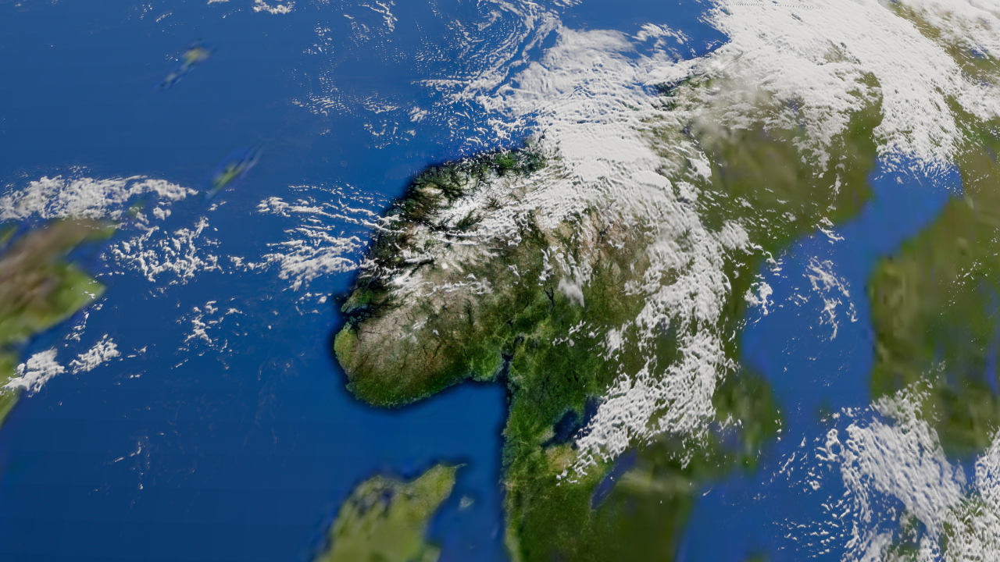
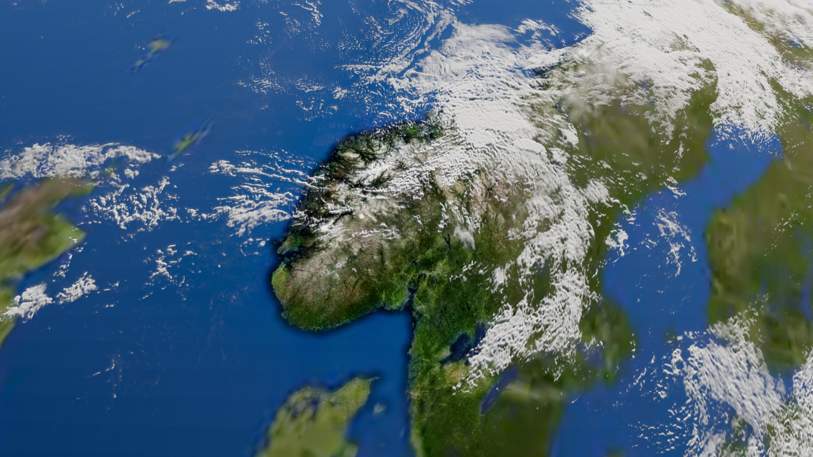
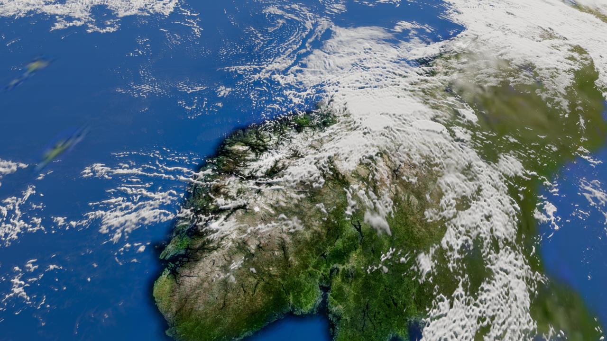
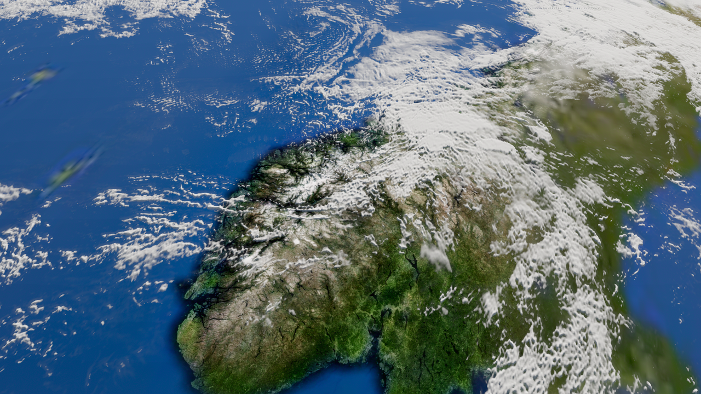
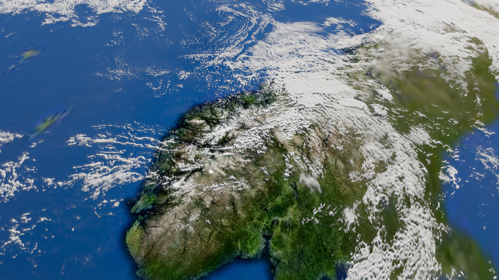
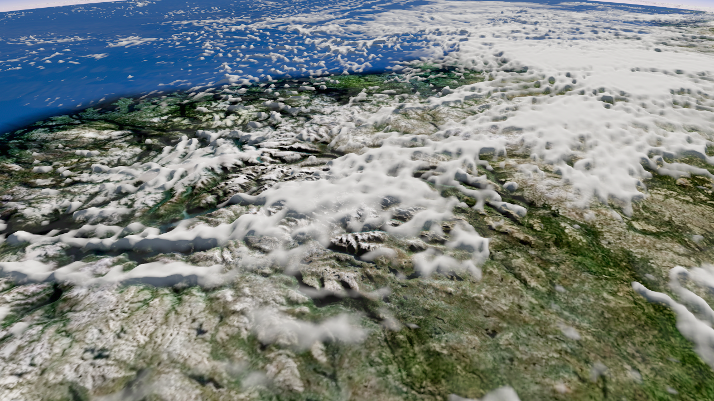
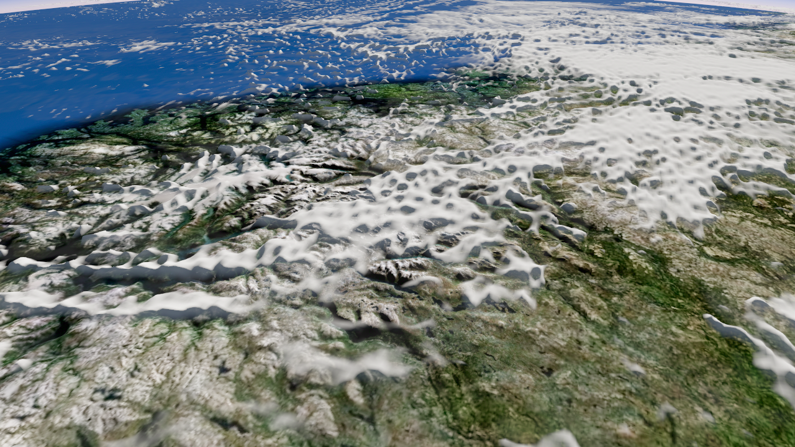
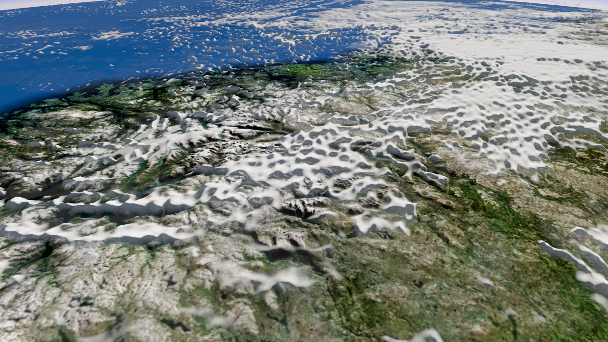
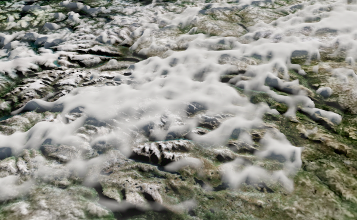
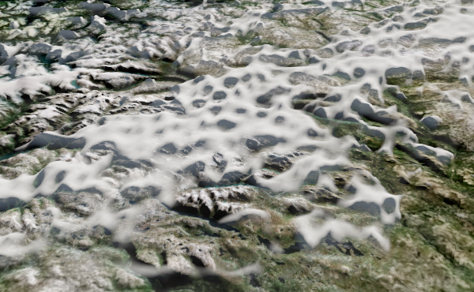
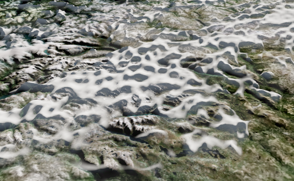
8초 자동 카메라 경로. 지형 그림자 보완은 보류; 실제 volume 내부 통과·서고 연결·사용자 채택은 별도 단계입니다.